Ujaval Gandhi
Ujaval Gandhiვექტორული მონაცემების საბაზისო სტილიზაცია (QGIS3)¶
რუკის შესადგენად საჭიროა GIS მონაცემებზე სტილის მინიჭება და მათი იმგვარად წარმოდგენა, რომ ვიზუალურად ინფორმაციული იყოს. QGIS-ში ამისათვის ხელმისაწვდომია მრავალი პარამეტრი. ამ სახელმძღვანელოში ჩვენ გამოვიყენებთ ტექსტურ ფაილს და მონაცემთა ვიზუალიზაციის სხვადასხვა ტექნიკას, რათა გამოვკვეთოთ სივრცითი კანონზომიერებები მონაცემებში.
ამოცანის მიმოხილვა¶
ჩვენ გამოვიყენებთ CSV ფაილს, რომელიც შეიცავს მსოფლიოს ყველა ელექტროსადგურის მდებარეობას და შევქმნით ვიზუალიზაციას, რომელიც აჩვენებს ამ ელექტროსადგურებში გამოყენებული განახლებადი და არაგანახლებადი საწვავის ტიპების განაწილებას.
სხვა უნარები, რომლებსაც ისწავლით¶
გამოიყენეთ გამოსახულებები (Expressions), რათა მოახდინოთ რამდენიმე ატრიბუტის მნიშვნელობის დაჯგუფება ერთ კატეგორიაში.
მონაცემების მიღება¶
მსოფლიო რესურსების ინსტიტუტმა (World Resources Institute) შეადგინა მსოფლიოს ელექტროსადგურების ყოვლისმომცველი, ღია წყაროს მქონე მონაცემთა ბაზა, რომელიც 30000-ზე მეტ ობიექტს მოიცავს. გადმოწერეთ ელექტროსადგურების გლობალური მონაცემთა ბაზა (The Global Power Plant Database) WRI-ის ღია მონაცემთა პორტალიდან.
Natural Earth-ს აქვს რამდენიმე გლობალური ვექტორული ფენა. გადმოწერეთ 10m Physical Vectors - Land, რომელიც ხმელეთის პოლიგონებს შეიცავს.
მოხერხებულობისთვის, შეგიძლიათ ზემოთ აღნიშნული ფენების ასლები პირდაპირ ქვემოთ მოცემული ბმულებიდან გადმოწეროთ:
globalpowerplantdatabasev120.zip
მონაცემთა პირველწყარო [NATURALEARTH]
მოქმედებათა თანმიმდევრობა¶
ამოაარქივეთ ორივე მონაცემთა ნაკრები თქვენს კომპიუტერში არსებულ საქაღალდეში. QGIS-ის ბრაუზერის პანელში (Browser Panel) მოძებნეთ დირექტორია, სადაც მონაცემები ამოაარქივეთ. გაშალეთ საქაღალდე
ne_10m_landდა აირჩიეთ ფენაne_10m_land.shp. გადმოიტანეთ ეს ფენა სამუშაო არეში (Canvas).
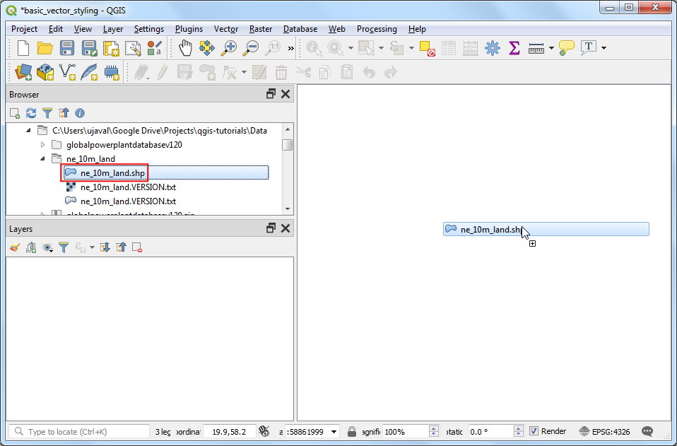
თქვენ დაინახავთ, რომ Layers პანელში დაემატა ახალი —
ne_10m_land. ელექტროსადგურების გლობალური მონაცემთა ბაზა წარმოდგენილია CSV ფაილის სახით, ამიტომ საჭიროა მისი იმპორტირება. აწკაპეთ Open Data Source Manager (მონაცემთა წყაროების მართვის გახსნა) ღილაკს Data Source Toolbar-ზე (მონაცემთა წყაროების პანელი). ასევე შეგიძლიათ გამოიყენოთ კლავიატურის კომბინაცია Ctrl + L.
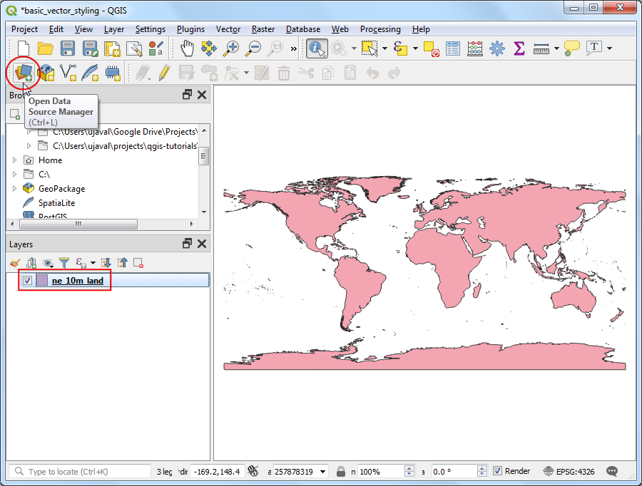
Data Source Manager ფანჯარაში გადართეთ Delimited Text (გამოყოფილი ტექსტი) ჩანართზე. აწკაპეთ ... ღილაკს File name (ფაილის სახელი) ველის გასწვრივ და მოძებნეთ დირექტორია, სადაც ამოაარქივეთ
globalpowerplantdatabasev120.zipფაილი. აირჩიეთglobal_power_plant_database.csv. QGIS ავტომატურად ამოიცნობს გამყოფ სიმბოლოს და გეომეტრიის ველებს. Geometry CRS (გეომეტრიის კოორდინატთა სისტემა) დატოვეთ სტანდარტულ მნიშვნელობაზე —EPSG:4326 - WGS84. დააჭირეთ Add (დამატება), შემდეგ კი Close (დახურვა).
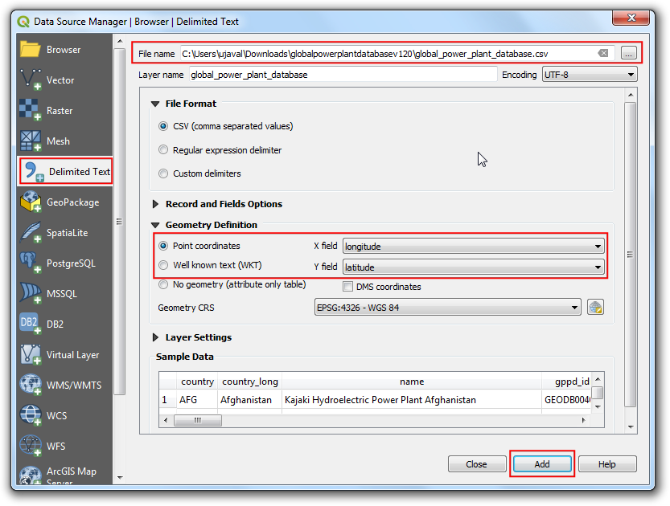
Layers (ფენები) პანელში დაემატება ახალი ფენა —
global_power_plant_database, ხოლო სამუშაო არეში (Canvas) დაინახავთ ელექტროსადგურების აღმნიშვნელ წერტილებს. ახლა ჩვენ მზად ვართ ორივე ფენის ვიზუალიზაციისთვის. დააჭირეთ Open the Layer Styling panel (ფენის სტილიზაციის პანელის გახსნა) ღილაკს Layers პანელის ზედა ნაწილში.
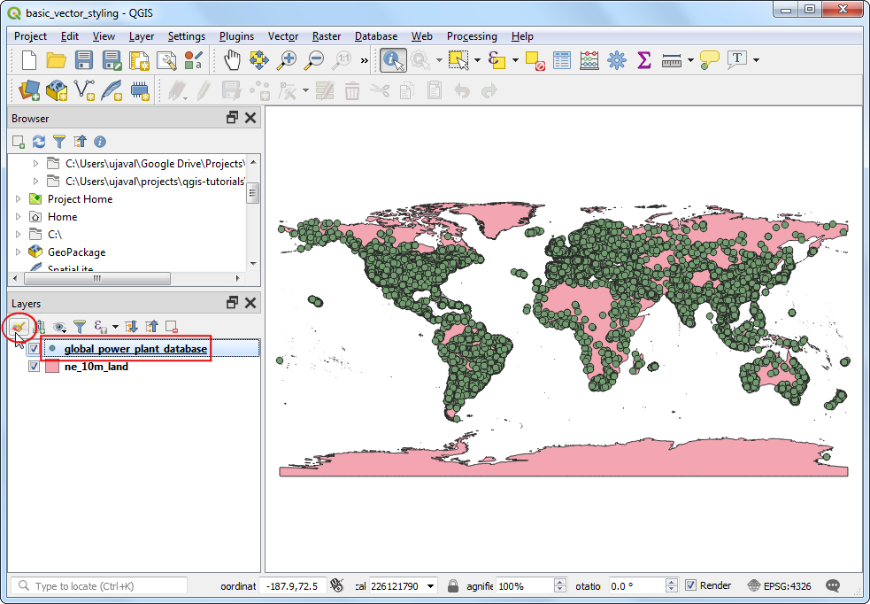
მარჯვენა მხარეს გაიხსნება Layer Styling (ფენის სტილიზაცია) პანელი. პირველ რიგში, აირჩიეთ ფენა
ne_10m_land. ეს იქნება ჩვენი საბაზისო ფენა, ამიტომ შეგვიძლია მისი სტილი მინიმალისტური დავტოვოთ, რათა ყურადღება არ გაიფანტოს. დააჭირეთSimple fill-ს და ფანჯარაში ჩამოსწიეთ კურსორი სხვა პარამეტრებზე. აირჩიეთ Fill color (შევსების ფერი) თქვენი გემოვნებით. დააჭირეთ ჩამოსაშლელ მენიუს Stroke color-ს (კონტურის ფერი) გასწვრივ და აირჩიეთTransparent Stroke(გამჭვირვალე კონტური). თქვენ დაინახავთ, რომ არჩეული სტილი ფენაზე მყისიერად აისახება.
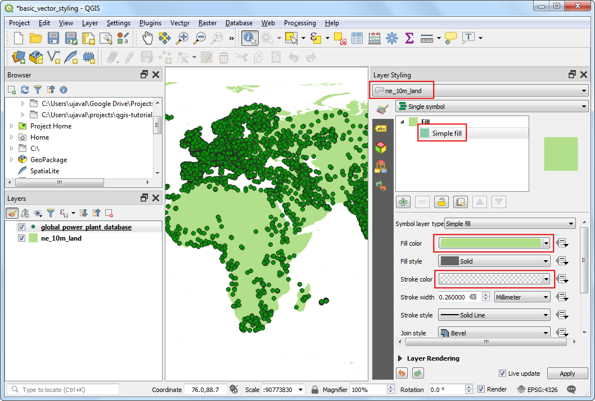
შემდეგ აირჩიეთ ფენა
global_power_plant_database. დააჭირეთSimple marker-ს (მარტივი მარკერი) და ჩამოსწიეთ კურსორი სხვა პარამეტრებზე. აირჩიეთ სამკუთხა მარკერი.
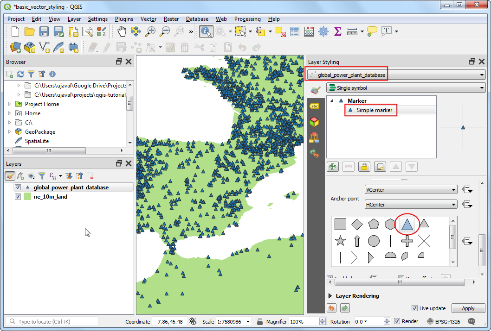
ასწიეთ კურსორი სხვა პარამეტრებზე ფანჯარაში ზემოთ და აირჩიეთ Fill color (შევსების ფერი) თქვენი გემოვნებით. სასარგებლო კარტოგრაფიული ტექნიკაა Stroke color-ისთვის (კონტურის ფერი) შევსების ფერზე ოდნავ მუქი ტონის შერჩევა. ნაცვლად იმისა, რომ ეს ხელით სცადოთ, QGIS გთავაზობთ გამოსახულებას (expression) ამის უფრო ზუსტად სამართავად. დააჭირეთ Data defined override (მონაცემებით განსაზღვრული გადაფარვა) ღილაკს და აირჩიეთ Edit (რედაქტირება).
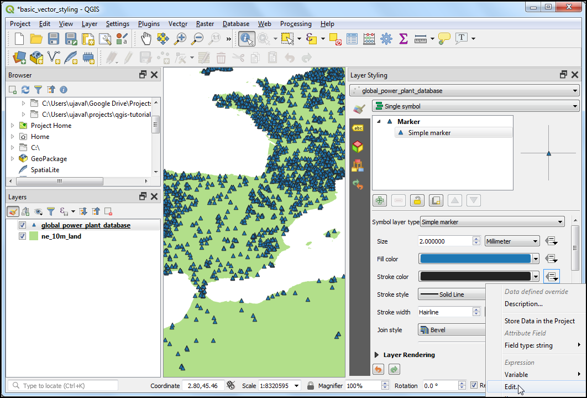
შეიყვანეთ შემდეგი გამოსახულება (expression), რათა ფერი შევსების ფერზე 30%-ით მუქი გახდეს და დააჭირეთ OK.
darker(@symbol_color, 130)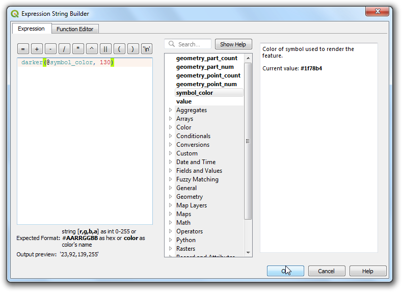
ნოტი
გაითვალისწინეთ, რომ ეს გამოსახულება (expression) დამოუკიდებელია თქვენ მიერ არჩეული შევსების ფერისგან. თქვენ დაინახავთ, რომ ეს უაღრესად სასარგებლოა შემდეგ ნაბიჯებში, სადაც პროგრამა ავტომატურად განსაზღვრავს კონტურის ფერს მითითებული შევსების ფერის საფუძველზე.
თქვენ შეამჩნევთ, რომ Data defined override (მონაცემებით განსაზღვრული გადაფარვა) ღილაკი Stroke color-ს (კონტურის ფერი) გასწვრივ გაყვითლდა — ეს მიუთითებს იმაზე, რომ მოცემული თვისება იმართება გადაფარვის ფუნქციით. ელექტროსადგურების ფენის ერთ სიმბოლოში (Single symbol) გამოსახვა არ არის ძალიან სასარგებლო. ის არ გვაწვდის ბევრ ინფორმაციას, გარდა ელექტროსადგურების მდებარეობისა. მოდით, გამოვიყენოთ განსხვავებული რენდერერი (renderer), რათა რუკა უფრო ინფორმაციული გავხადოთ. აწკაპეთ Symbology ჩამოსაშლელ მენიუს და აირჩიეთ
Categorized(კატეგორიზებული) რენდერერი.
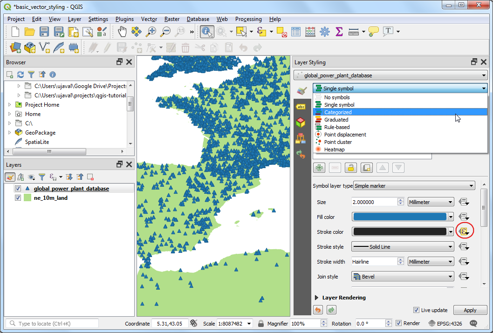
ფენა „„global_power_plant_database„„ შეიცავს ატრიბუტს, რომელიც მიუთითებს თითოეულ ელექტროსადგურში გამოყენებულ ძირითად საწვავს. ჩვენ შეგვიძლია შევქმნათ სტილი, სადაც საწვავის ყოველი უნიკალური ტიპი სხვადასხვა ფერით იქნება ნაჩვენები. აირჩიეთ
primary_fuelსვეტში Column. დააჭირეთ Classify (კლასიფიკაცია). თქვენ დაინახავთ, რომ გამოჩნდება მრავალი კატეგორია და რუკის ვიზუალიც შესაბამისად შეიცვლება.
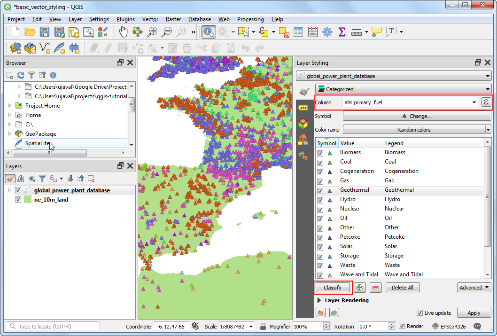
მიუხედავად იმისა, რომ კატეგორიზებული (Categorized) ხედვა სასარგებლოა, ეს ფენა შეიცავს ძალიან ბევრ კატეგორიას რუკის შინაარსიანი ინტერპრეტაციისთვის. უკეთესი მიდგომა იქნებოდა საწვავის გარკვეული ტიპების დაჯგუფება და კლასების რაოდენობის შემცირება. მოდით, ვცადოთ 3 კატეგორიის შექმნა — განახლებადი საწვავი, არაგანახლებადი საწვავი და სხვა. აირჩიეთ
Rule-based(წესებზე დაფუძნებული) რენდერერი. ჩვენ გვსურს წავშალოთ ყველა კატეგორია, გარდა პირველისა. აირჩიეთ ზემოდან მეორე კატეგორია, გეჭიროთ Shift კლავიში და დააწკაპუნეთ ბოლო კატეგორიაზე. ეს მონიშნავს ყველა კატეგორიას, გარდა პირველისა. მონიშვნის შემდეგ, დააჭირეთ Remove selected rules (მონიშნული წესების წაშლა) ღილაკს მათ წასაშლელად.
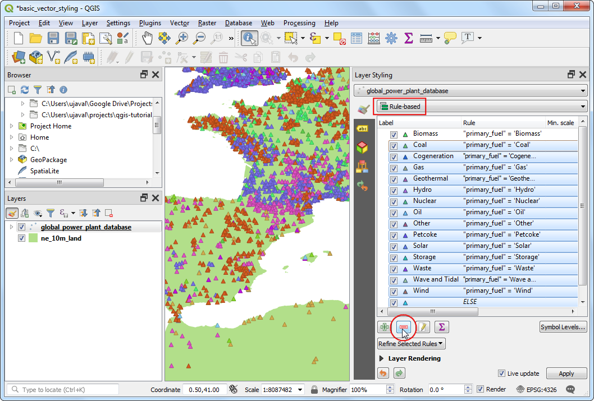
მონიშნეთ დარჩენილი წესი და დააჭირეთ Edit current rule (მიმდინარე წესის რედაქტირება) ღილაკს.
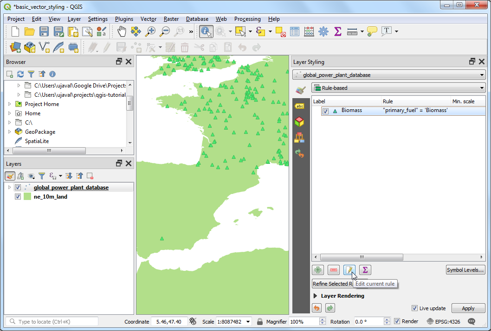
Label (ჭდე) ველში ჩაწერეთ
Renewable fuel. დააჭირეთ Expression (გამოსახულება) ღილაკს, რომელიც მდებარეობს Filter (ფილტრი) ველის გასწვრივ.
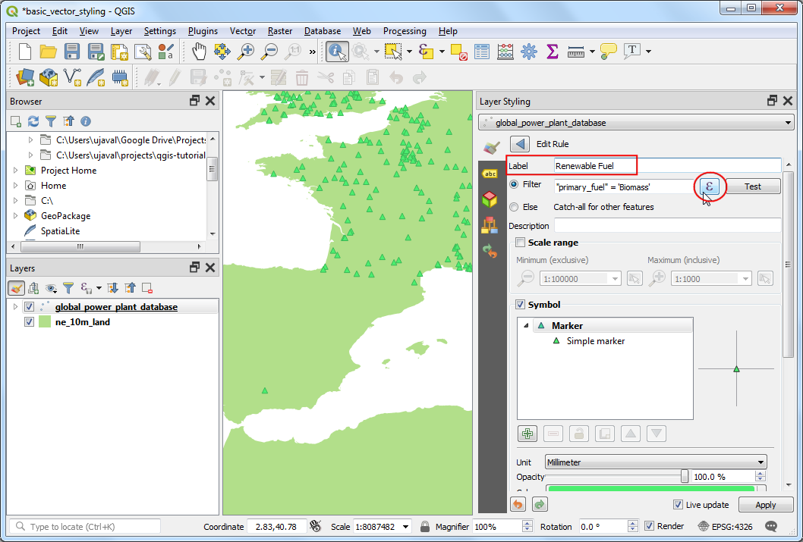
Expression String Builder (გამოსახულების შემქმნელი) ფანჯარაში შეიყვანეთ შემდეგი გამოსახულება და დააჭირეთ OK. აქ ჩვენ განახლებადი ენერგიის რამდენიმე კატეგორიას ერთ კატეგორიაში ვაჯგუფებთ.
"primary_fuel" IN ('Biomass', 'Geothermal', 'Hydro', 'Solar', 'Wind', 'Storage', 'Wave and Tidal')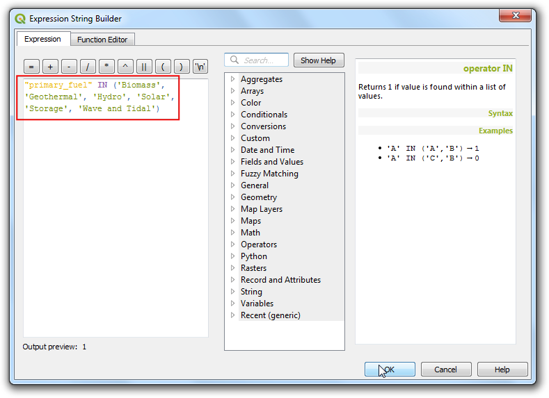
ნოტი
განახლებადი და არაგანახლებადი კატეგორიებისთვის შერჩეული საწვავის ტიპები ეფუძნება ვიკიპედიას. არსებობს ალტერნატიული განმარტებები და კლასიფიკაციები, რომლებიც შეიძლება არ ემთხვეოდეს აქ შერჩეულ ვარიანტებს.
ჩამოსწიეთ კურსორი სხვა პარამეტრებზე ფანჯარაში ქვემოთ და დააჭირეთ Simple marker-ს (მარტივი მარკერი). აირჩიეთ შესაბამისი Fill color (შევსების ფერი). დასრულების შემდეგ, დააჭირეთ ღილაკს Back (უკან).
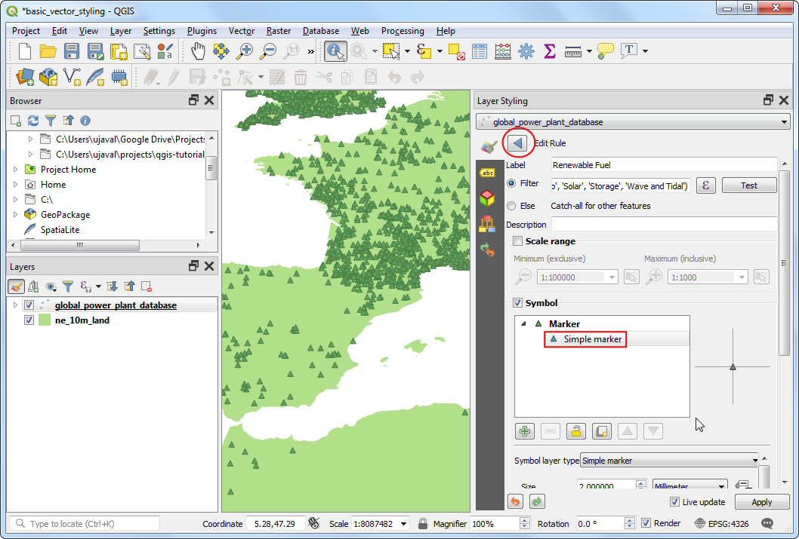
თქვენ დაინახავთ, რომ ფენაზე გამოიყენება მხოლოდ ერთი წესი — Renewable fuel (განახლებადი საწვავი) კატეგორიისთვის. დააწკაპუნეთ ამ სტრიქონზე მაუსის მარჯვენა ღილაკით და აირჩიეთ Copy (კოპირება). კვლავ დააწკაპუნეთ მარჯვენა ღილაკით და აირჩიეთ Paste (ჩასმა).
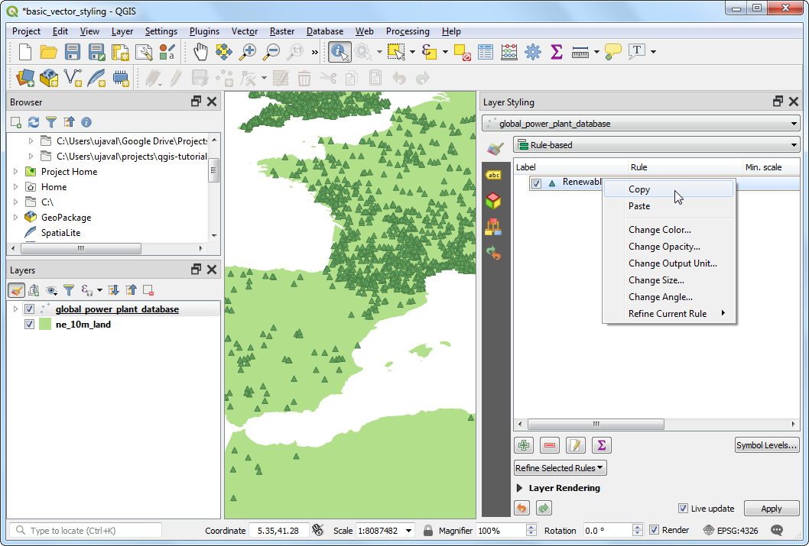
უკვე არსებული წესის ასლი დაემატება. მონიშნეთ ახლად დამატებული სტრიქონი და დააჭირეთ Edit current rule (მიმდინარე წესის რედაქტირება) ღილაკს.
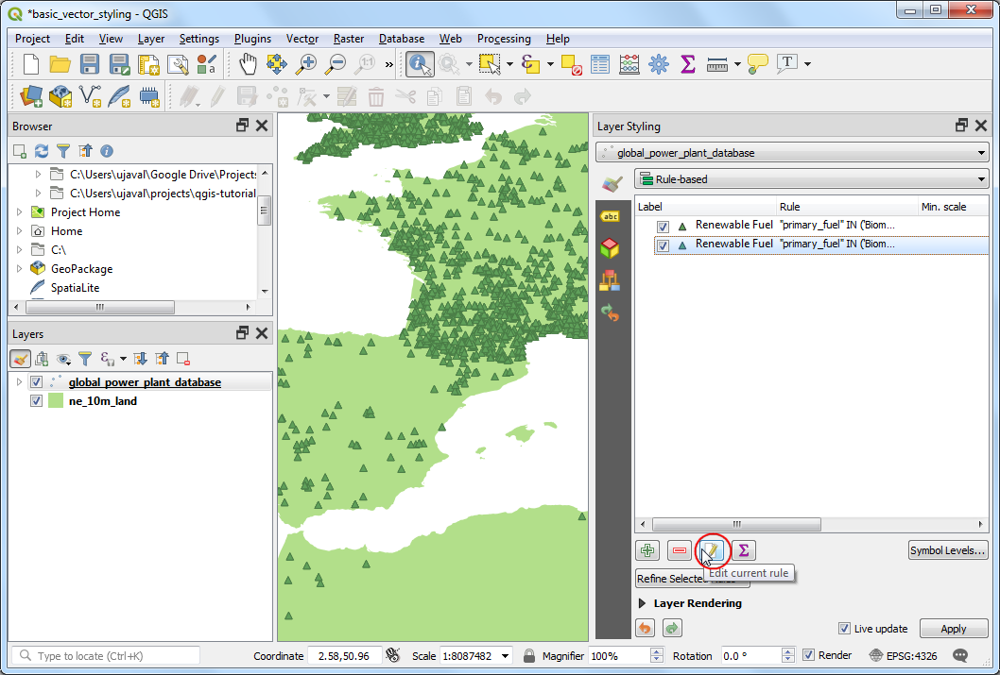
Label (წარწერის) ველში ჩაწერეთ
Non-renewable fuel. დააჭირეთ Expression (გამოსახულება) ღილაკს, რომელიც მდებარეობს Filter (ფილტრი) ველის გასწვრივ.
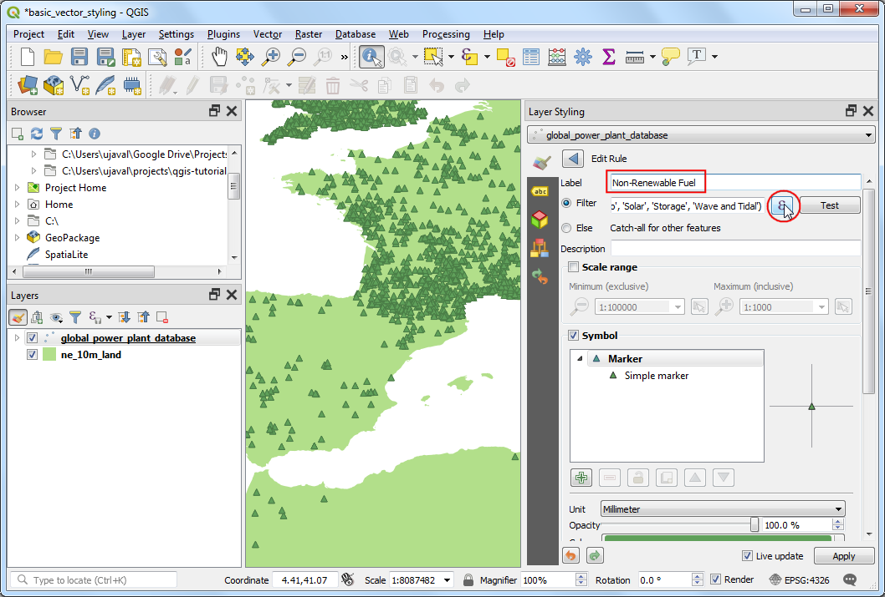
Expression String Builder (გამოსახულების შემქმნელი) ფანჯარაში შეიყვანეთ შემდეგი გამოსახულება და დააჭირეთ OK.
"primary_fuel" IN ('Coal', 'Gas', 'Nuclear', 'Oil', 'Petcoke')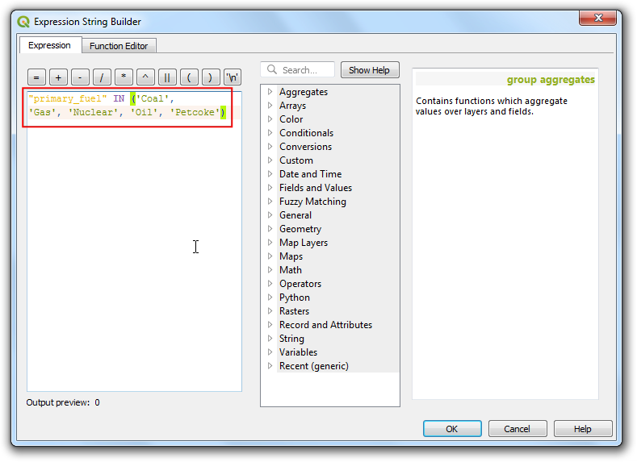
ჩამოსწიეთ კურსორი სხვა პარამეტრებზე ფანჯარაში ქვემოთ და დააჭირეთ Simple marker-ს (მარტივი მარკერი). აირჩიეთ შესაბამისი Fill color (შევსების ფერი). დასრულების შემდეგ, დააჭირეთ ღილაკს Back (უკან).
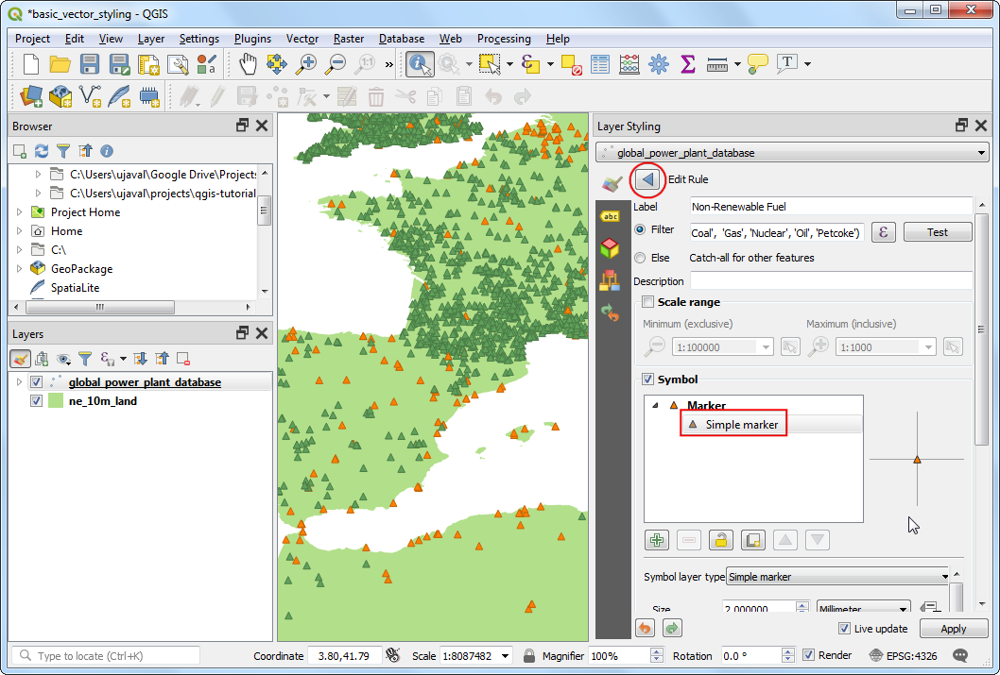
გაიმეორეთ კოპირება/ჩასმის (Copy/Paste) პროცესი მესამე წესის დასამატებლად. მონიშნეთ იგი და დააჭირეთ Edit current rule (მიმდინარე წესის რედაქტირება) ღილაკს.
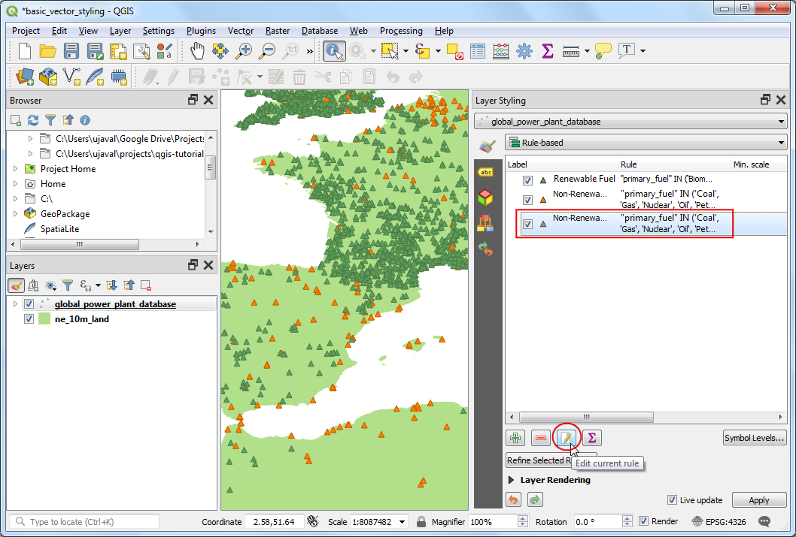
Label (წარწერის) ველში ჩაწერეთ Other. Filter (ფილტრი) ველის ნაცვლად, აირჩიეთ Else - Catch all for other features (Else — ყველა სხვა ობიექტის მოცვა). ეს უზრუნველყოფს იმას, რომ ნებისმიერი კატეგორია, რომელიც წინა 2 წესში გამოგვრჩა, ამ წესით გაფორმდება. ჩამოსწიეთ კურსორი სხვა პარამეტრებზე ფანჯარაში ქვემოთ და დააჭირეთ Simple marker-ს (მარტივი მარკერი). აირჩიეთ შესაბამისი Fill color (შევსების ფერი). დასრულების შემდეგ, დააჭირეთ ღილაკს Back (უკან).
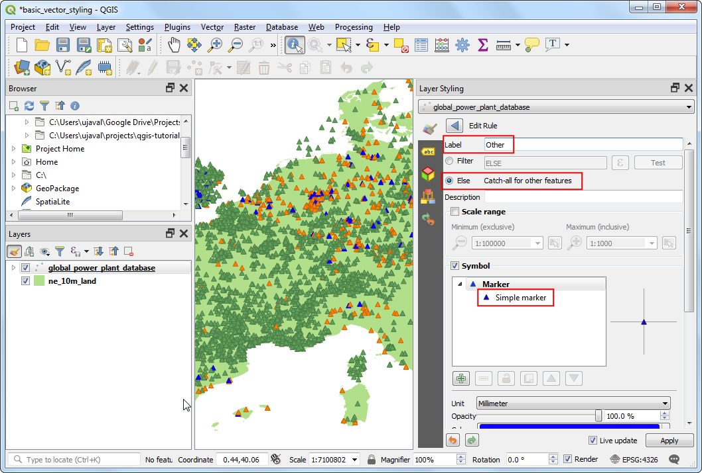
რეკატეგორიზაცია დასრულებულია. ახლა თქვენ ხედავთ ბევრად უფრო სუფთა ვიზუალს, რომელიც გვიჩვენებს ელექტროსადგურების მიერ გამოყენებული განახლებადი და არაგანახლებადი საწვავის წყაროების განაწილებას ქვეყნების მიხედვით. თუმცა, ეს სრულ სურათს არ იძლევა. ჩვენ შეგვიძლია სტილს კიდევ ერთი ცვლადი დავამატოთ. ნაცვლად იმისა, რომ ყველა მარკერი ერთნაირი ზომის იყოს, შეგვიძლია მათი ზომა თითოეული სადგურის დადგმული სიმძლავრის (power generation capacity) პროპორციული გავხადოთ. კარტოგრაფიაში ამ ტექნიკას მულტივარიაციული კარტოგრაფირება (Multivariate mapping) ეწოდება. დააწკაპუნეთ მაუსის მარჯვენა ღილაკით
Renewable fuelწესზე და აირჩიეთ Change Size (ზომის შეცვლა).
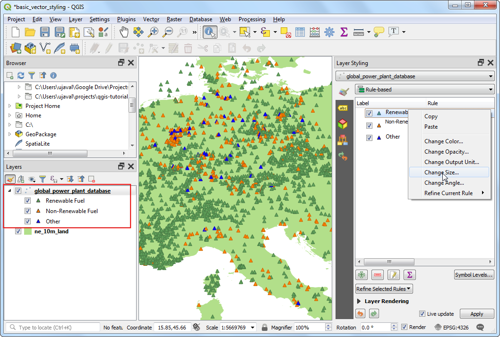
დააჭირეთ Data defined override (მონაცემებით განსაზღვრული გადაფარვა) ღილაკს Size (ზომა) ველის გასწვრივ. აირჩიეთ Edit (რედაქტირება).
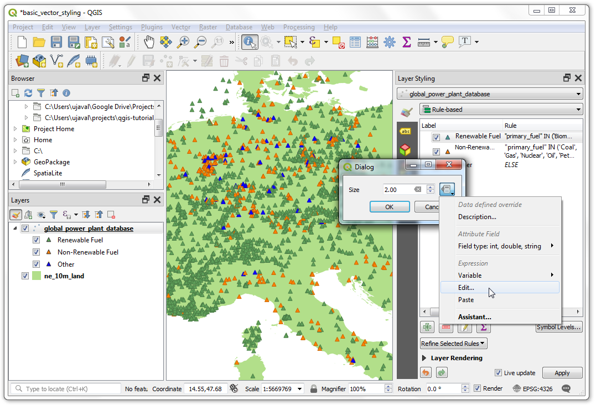
ვინაიდან ჩვენს მონაცემთა ბაზაში ელექტროსადგურების სიმძლავრეებს შორის სხვაობა ძალიან დიდია, ზომისთვის მცირე დიაპაზონის მისაღებად ეფექტური გზაა
log10ფუნქციის გამოყენება. თქვენ შეგიძლიათ ექსპერიმენტები ჩაატაროთ სხვადასხვა გამოსახულებაზე, რათა მიიღოთ თქვენთვის სასურველი ვიზუალიზაცია. შეიყვანეთ შემდეგი გამოსახულება და დააჭირეთ OK.
log10("capacity_mw") + 1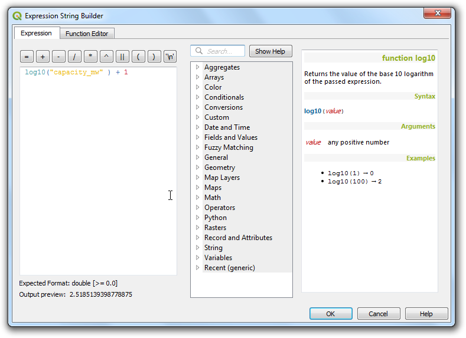
გაიმეორეთ იგივე პროცესი სხვა წესებისთვისაც.
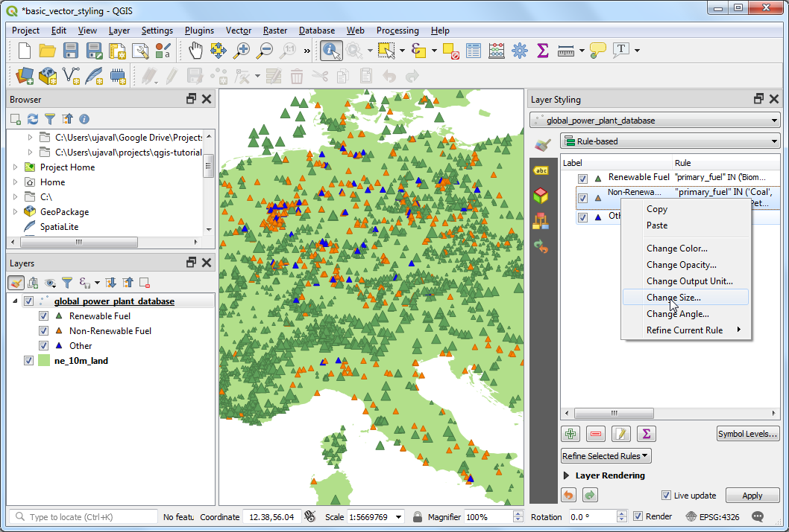
მას შემდეგ, რაც შედეგით კმაყოფილი იქნებით, შეგიძლიათ დახუროთ Layer Styling panel (ფენის სტილიზაციის პანელი).
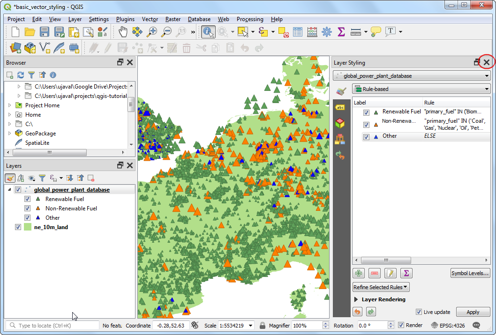
ჩვენს საბოლოო ვიზუალიზაციას თუ დავაკვირდებით, მონაცემთა ბაზაში არსებული კანონზომიერებები მაშინვე თვალსაჩინო ხდება. მაგალითად, ევროპის თავზე უფრო მეტია ისეთი ელექტროსადგური, რომელიც ენერგიის განახლებად წყაროებს იყენებს, თუმცა მათ უფრო ნაკლები სიმძლავრე აქვთ, ვიდრე არაგანახლებადი ენერგიის წყაროებზე მომუშავე სადგურებს.
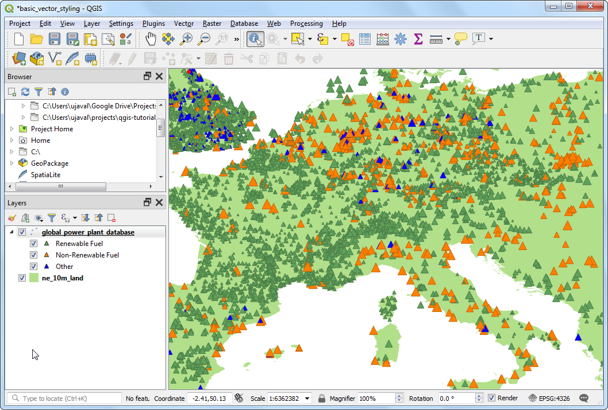
If you want to give feedback or share your experience with this tutorial, please comment below. (requires GitHub account)